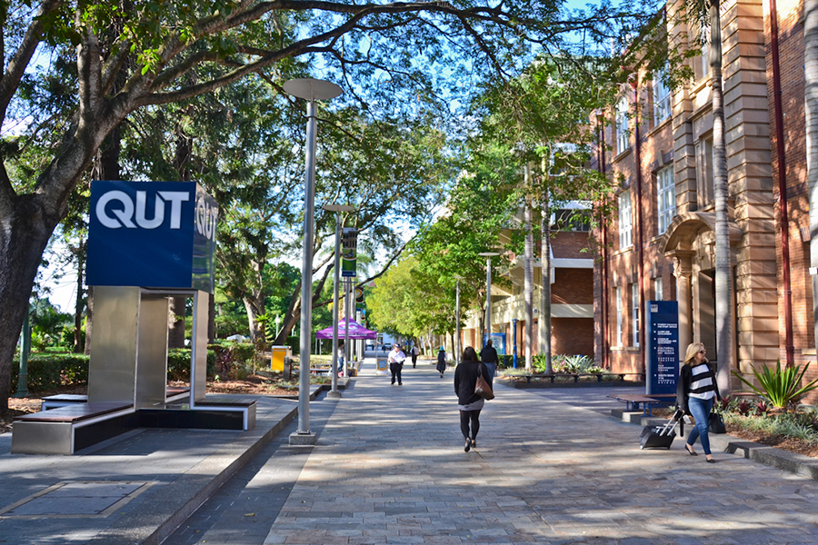

Queendland University of Technique(QUT)
Venue will be release soon!
The Queensland University of Technology (QUT) is a leading Australian public research university located in the vibrant city of Brisbane, Queensland. With its dynamic Gardens Point campus nestled along the Brisbane River and the heritage-rich Kelvin Grove campus just north of the CBD, QUT combines cutting-edge facilities with a strong commitment to real-world impact. QUT has built a national and international reputation for excellence in data science, AI, and digital transformation, supported by flagship research hubs such as the Centre for Data Science. We look forward to welcoming researchers, practitioners, and students from across Australia to engage, share insights, and foster collaboration in the heart of sunny Brisbane.
